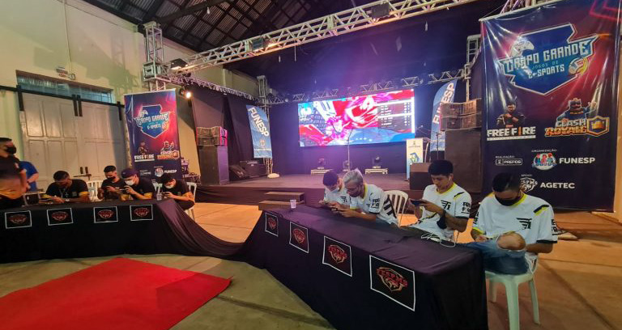

Samsung troca CEOs e junta divisão mobile com a de eletrônicos
Postado 07 de Dezembro 2021
A fabricante sul-coreana Samsung anunciou na terça-feira
(7) uma reformulação que afeta tanto o quadro de gerência
quanto a organização de setores da empresa
...
Uma das novidades é a união de duas divisões em apenas uma.
A partir de agora, o segmento de dispositivos móveis e o de
aparelhos eletrônicos para consumo farão parte do mesmo setor,
agora batizado de SET. Ele será comandado por Jong-Hee Han,
que agora acumula os cargos de chefe da divisão de displays
visuais (ou seja, televisores), chefe da divisão de aparelhos, vice-presidente e co-CEO.
O outro co-CEO será Kyung Kye-hyun, que cuidava até então dos
negócios envolvendo chips de memória e tecnologia em geral.
Outro veterano da marca, Chung Hyun-ho, virou o cabeça por
trás de uma "força-tarefa" criada para coordenar a tomada de
decisões dentro da empresa.
Mais mudanças?
As novidades na Samsung marcam um período de
alterações no mercado e na estrutura interna da
companhia. O atual herdeiro da marca, Jay Y. Lee,
passou para o regime de liberdade condicional em
agosto de 2021 após reviravoltas nas acusações de
suborno envolvendo o governo do país.
Além disso, apesar de ainda ser a líder global
em Smart TVs e smartphones, também dominando regiões
como a América Latina, a sul-coreana viu o segmento
desacelerar e a concorrência apertar — enquanto a divisão
de semicondutores passou a ser a mais lucrativa, especialmente
em um período de escassez de chips e alta demanda.
Finais do Campeonato de Jogos Eletrônicos serão disputadas no fim de semana
Postado 08 de Dezembro 2021

As finais do 1º Campeonato de Jogos Eletrônicos
Campo-grandense serão disputadas nos dias 11 e 12
Dezembro, sábado e domingo próximos. O evento é da
Prefeitura Municipal de Campo Grande, por meio da
Fundação Municipal do Esporte (Funesp)
...
Os jogos terão início no Ginásio Guanandizão, a
partir das 9h de sábado (11), com a categoria dos
7 aos 13 anos com o jogo Clash Royalle. No período
vespertino é a vez das equipes escolares da categoria
de 14 a 17 anos disputarem, a partir das 13h, o jogo
Free Fire. No domingo (12), a partir das 13h, as
equipes da categoria livre disputarão R$ 9 mil em
prêmios, no jogo de Free Fire.
O primeiro campeonato de jogos eletrônicos
público do Brasil foi lançado pela Prefeitura
Municipal de Campo Grande, no dia 17 de setembro.
Em três meses de competição, foram 382 equipes
de Free Fire e 123 atletas de Clash Royalle e
para a final restaram 53 finalistas.
Para a secretária da Juventude Laura Miranda,
as finais do campeonato consolida a parceria
entre as secretarias e federação. “Nós somos
uma secretaria que em conjunto com outras pastas
municipais, podemos promover cultura, esporte
e lazer aos jovens e participar da final dos jogos
eletrônico é um presente para a Sejuv”, explica
a secretária Laura Miranda.
Segundo o vice-presidente da Federação de E-Sports
Eletrônicos de Mato Grosso do Sul, André Lacerda,
a realização dos jogos eletrônicos proporciona
interação social através da tecnologia.
“A Federação de Jogos Eletrônicos de MS agradece
a todos os parceiros que atuaram junto na construção
do 1º Campeonato de Jogos Eletrônicos Campo-grandense,
para nós foi uma alegria em testemunhar o maior
evento de E-sports, isso mostra que a Fesp/MS está
para abrigar e contextualizar este cenário que já
existia em nossa cidade” conclui André Lacerda.
A competição é realizada em parceria com a Secretaria
Municipal da Juventude (Sejuv), com o apoio da Federação
de e-Sports Eletrônicos de Mato Grosso do Sul (Fesp/MS)
e da Agência Municipal de Tecnologia da Informação e Inovação (Agetec).
Eletrônicos são usados como 'iscas' por golpistas na Black Friday
Postado 08 de Dezembro 2021
Um estudo feito por um site especializado em compra e venda
e uma plataforma de proteção de identidades digitais
afirma que os eletrônicos são os produtos preferidos de
golpistas na Black Friday. Os criminosos usam a desatenção
das vítimas e as supostas ofertas-relâmpago para cometer
uma série de golpes durante a data celebrada anualmente pelo comércio
...
O levantamento constatou que os produtos mais visados
pelos criminosos são os celulares, envolvidos em 43%
dos golpes. Videogames e computadores completam a
lista, com 14% e 11%, respectivamente. São Paulo,
Rio de Janeiro e Minas Gerais são os estados com o
maior número de casos (56% se combinados).
O golpe mais aplicado na Black Friday é
o de falso pagamento, que representa 64%
das queixas. Esse crime se estabelece quando
a pessoa paga um boleto que não está atrelado
à loja na qual realizou a compra. Outra forma
que os golpistas encontraram para fazer
vítimas com esse golpe é enviando comprovantes
de pagamento falsos e recebendo produtos
sem fazer nenhum tipo de transação financeira.
Para a diretora de Produto e Operações da
OLX, Beatriz Soares, os golpistas usam o
dinamismo das ofertas na Black Friday para
fazer vítimas, que muitas vezes são seduzidas
pelas oportunidades imperdíveis.
“Um componente importante das compras da Black Friday
é a agilidade, uma vez que as ofertas e estoques têm
tempo determinado, o que faz com que as pessoas não
se atentem a detalhes importantes, ficando mais
expostas à ação dos golpistas.”
Soares recomenda que os internautas fiquem atentos
às páginas que acessam, verificando sempre os links
em que clicam e o domínio dos emails que recebem
com ofertas e promoções.
Outro golpe comum durante a Black Friday é o roubo de
dados pessoais, como CPF e informações bancárias,
além dos próprios anúncios falsos com ofertas imperdíveis.
A maioria das vítimas são homens por volta dos 30 anos
que fazem compras pelo celular. Segundo o levantamento
feito pela OLX e pela AllowMe, a data traz um prejuízo
estimado em R$ 1,3 milhão aos consumidores que caem nos golpes.
Em novembro, mês em que costuma ocorrer a Black Friday,
há um aumento de 78% no uso de IPs de alto risco
vinculados a ataques cibernéticos na comparação
com outubro. “Isso demonstra que os fraudadores
também acompanham as principais datas do varejo”,
aponta o estudo.
Postagens Recentes
Pesquisa mostra profissões em alta no setor de tecnologia para 2022
On-line: faculdade abre inscrições para cursos gratuitos de tecnologia
PagBrasil tem vagas de emprego na área de tecnologia